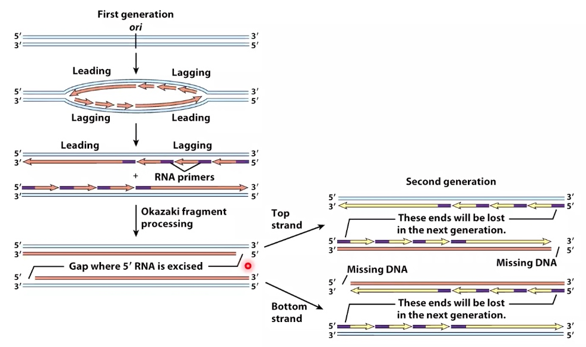

Termination of Replication in Bacteria
Replication of Linear Chromosomes : the End Replication Problem
The binding of polymerase needs 3' hydroxyl. But at the end of lagging strand(right), the 3' hydroxyl is missing.

Problem
Some biologists think that people who have shorter average telomere length have an older biological age.
Telomerase can extend the ends of eukaryotic chromosomes
What tolemerase does isi it's basically a reverse transcriptase that can use an RNA template that comes prepackaged as a way to synthesize additional DNA.
We can give enough run way for RNA primer.
Some cancer cells just reactivate tolemerase and they can get around the replication problem.
Mammalian telomeres form T-loops that protect telomeres and prevent excessive telomerase extension
What the telomeres loops do is they basically take this 3' end of DNA, they bury it into another part of the telomere where it's duplex.
By doing so, the T-loops and teh shelterin complex also prevent the accumulation of DNA damage at telomeres.
DNA Damage
Different Sources
- Cellular Metabolism
- UV Light Exposure
- Ionizing Radiation
- Chemical Exposure
- Replication Errors
Poll Everywhere
You have discovered a mutant strain of bacteria with a hyperactive Dam methylase. Which of the following statements should be TRUE for this mutant strain?
- A. Initiation of replication will be less frequent
- B. Initiation of replication will be more frequent
- C. The bacteria will be unable to initiate replication
- D. Mutation frequency should be increased
- E. Mutation frequency should be decreased
- F. Mutation frequency should be unaffected
Methylase will not only effect polymerase but also the MutH.
Mismatch Repair in E.coli

- DNA polymerase misincorporates a nucleotide, crearing a mismatch. The newly synthesized GATC site is hemimethylated.
- MutS binds the mismatch ad forms a complex with MutL.
- MutS-MutL scan DNA bidirectionally, forming a loop.
- MutS-MutL finds the nearest GATC site and recruits MutH, which cleaves the newly synthesized unmethlyated GATC sequence.
- Helicase II and an exonuclease unwind and degrade the newly replicated DNA strand past the mismatch.
- Polymerase III fills the gap, and ligase seals the DNA.
Common DNA Damage
1. Water and Nitrous Acid(from Nitrates) Can Cause Deamination of Bases
Which will cause the mutation:
- GC --> AT
- TA --> CG
- GC --> AT
It is difficult to deal with，because We are creating things that are naturally occurring.
2. Water can cause depurination/depyrimidination (loss of bases)
Transform purine and pyrimid to abasic site. So polymerase could potentially get confused.
3. Reaction of oxygen with bases
In this way, G cannot only be paired to C but also A.
4. Base Alkylation
GC --> AT.
After adding a methyl group to the oxgen in the six position, the G will do base pair with thymine.
Summary of DNA Damage Guanine As An Example
Three General Strategies for Dealing with DNA Damage
1. Direct Reversal
Methyl Group Removal
The methyltransferase protien is not an enzyme. So, this method of repai is energetically very expensive.
The methyltransferase just scan through the genome to look for substrates that will fit into their active site.
2. Excise Damage and Resynthesize
Base Excision Repair
An example of BER(Base excision repair): Uracil glycosylase (remember Okazaki?) is involved in excision of uracil from DNA
Base excision repair using uracil glycosylase
The glycosylase flips out the base. If it fits in the active site, it gets cleaved
An in-vitro experiment
- Add dsDNA with a dU inserted at position 8 of a labeled strabd
- Add uracil glycoslase + AP endonuclease
- Electrophoresis the products using denaturing PAGE.
A special type of DNA damage: Ultraviolet rediation creates covalent bonds between bases
There are two ways to tackle this
1. Photoreactivation can reverse thymine dimers
DNA photolyase uses energy from visible light to rearrange the bonds between the thymines.
Unlike methyltransferase, DNA photolyase is an enzyme.
However, phtolyase is not present in the genome of placental mammals.
2. Nucleotide Excisioin Repair(NER) Removes DNA-distroting Lesions
Bacteria
In bacteria, the UvR stands for UV resistance can recognize thymine dimer. The reason itis called is because if tou mutate these genes, they are not UV resistance.
Uvr A/B will recognize the damage and bind very tightly to it.
UvrB will recuit the UvrC(excinuclease). UvrC will make nicks both 3' and 5'.
Eukaryote
XPC will recognize thymine dimer and brings in proteins can make nicks.
Poll Everwhere
Benzo[a]pyrene is a compound found in charred meat.
It can form adducts with guanine, causing large bulges in the DNA double helix.
Cells lacking which of the following proteins do you predict will be most sensitive to benzo[a]pyrene?
- A. AP endonuclease
- B. MutS
- C. Photolyase
- D. Uracil glycosylase
- E. UvrA